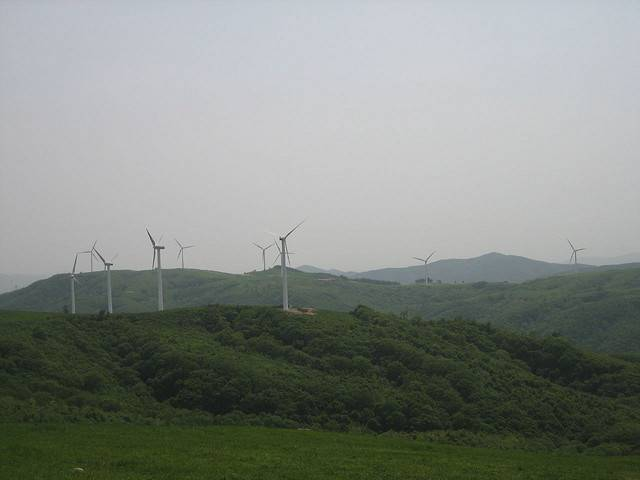

강원도 108억 원 현물출자한 대관령 풍력단지, 연 순이익 3억 원 그쳐…도의회 행감서 "경제성·주민 피해 다시 따져야"

강원개발공사 운영 단지 예상 매출 21억 원…유지보수·인건비 오르면 수익 더 줄 수도, 소음·저주파·그림자 깜박임 등 사회적 비용도 거론
강원도의회 행정사무감사에서 강원개발공사가 운영하는 대관령 풍력발전단지의 경제성이 도마에 올랐다. 이 단지는 강원도가 108억 원을 현물출자한 공공 재생에너지 사업이지만, 예상 실적 기준 연 매출은 21억 원, 순이익은 3억 원 수준에 머문다. 도의회는 유지보수비와 인건비 상승까지 더하면 수익성이 더 떨어질 수 있다며 사업 경제성을 다시 점검하라고 요구했다. 자연 훼손과 소음·저주파·그림자 깜박임 같은 주민 생활 피해, 임산물 생산 감소 등 사회적 비용도 함께 따져야 한다는 지적도 나왔다. 도의회는 재생에너지 확대의 필요성에는 공감하면서도, 앞으로 풍력 사업은 경제성과 함께 지역 수용성과 환경 가치를 고려해야 한다고 주문했다.
시민에너지 관점
108억 원을 넣고 연 3억 원을 남기는 구조는 공공이 발전소를 가졌다는 것만으로 지역 이익이 생기지 않는다는 점을 보여 준다. 덴마크는 풍력단지 지분 일부를 주변 주민에게 먼저 팔도록 해, 소음과 경관 부담을 지는 사람이 배당도 받게 만들었고 그 덕에 반대가 줄었다. 노후 설비 교체(리파워링) 때 같은 땅에서 발전량을 크게 늘릴 수 있는 만큼, 낮은 수익을 이유로 공공 풍력을 접을 일이 아니라 소유 구조를 바꿀 때다. 강원도와 강원개발공사는 단지별 수익과 비용을 공개하고, 리파워링 계획에 주변 주민 출자와 배당을 넣어야 한다.
출처: 엔사이드 2026-11-12 김아영 원문 보기
江原道が108億ウォンを現物出資した大関嶺風力団地、年間純利益3億ウォンにとどまる…道議会の監査で「経済性と住民被害を改めて検証せよ」
江原開発公社が運営する団地の予想売上は21億ウォン…維持補修費や人件費が上がれば収益はさらに減る恐れ、騒音・低周波・シャドーフリッカーなど社会的費用も指摘
江原道議会の行政事務監査で、江原開発公社が運営する大関嶺風力発電団地の経済性が取り上げられた。この団地は江原道が108億ウォンを現物出資した公共の再生可能エネルギー事業だが、予想実績ベースで年間売上は21億ウォン、純利益は3億ウォン程度にとどまる。道議会は、維持補修費や人件費の上昇まで含めれば収益性はさらに下がりかねないとして、事業の経済性を改めて点検するよう求めた。自然破壊や騒音・低周波・シャドーフリッカーといった住民生活への被害、林産物の生産減少などの社会的費用も併せて検討すべきだとの指摘も出た。道議会は再生可能エネルギー拡大の必要性には共感しつつも、今後の風力事業は経済性とともに地域の受容性と環境的価値を考慮すべきだと求めた。
市民エネルギーの視点
108億ウォンを投じて年3億ウォンを残す構造は、公共が発電所を持つというだけでは地域の利益は生まれないことを示している。デンマークは風力団地の持ち分の一部をまず周辺住民に売るようにし、騒音や景観の負担を負う人が配当も受け取れるようにしたことで反対が減った。老朽設備の更新（リパワリング）では同じ土地で発電量を大きく増やせるため、低い収益を理由に公共風力をやめるのではなく、所有構造を変えるときだ。江原道と江原開発公社は団地ごとの収益と費用を公開し、リパワリング計画に周辺住民の出資と配当を盛り込むべきだ。
出典: 엔사이드 2026-11-12 김아영 原文を読む
江原道以108亿韩元实物出资的大关岭风电场年净利润仅3亿韩元…道议会监察："重新审视经济性和居民受害"
江原开发公社运营的风电场预计年销售额21亿韩元…维修费和人工成本上涨可能进一步压缩利润，噪音、低频、阴影闪烁等社会成本也被提及
在江原道议会行政事务监察中，江原开发公社运营的大关岭风力发电场的经济性受到质疑。该风电场是江原道以108亿韩元实物出资的公共可再生能源项目，但按预期业绩计算，年销售额仅21亿韩元，净利润约3亿韩元。道议会指出，若计入维修费和人工成本上涨，盈利能力可能进一步下降，要求重新检查项目经济性。会上还有意见认为，应一并考虑破坏自然、噪音、低频、阴影闪烁等对居民生活的影响以及林产品产量下降等社会成本。道议会虽认同扩大可再生能源的必要性，但要求今后的风电项目在经济性之外，还要考虑地区接受度和环境价值。
市民能源视角
投入108亿韩元、每年只剩3亿韩元的结构表明，仅仅由公共部门拥有电站，并不会自动带来地方利益。丹麦规定风电场的部分股份须优先出售给周边居民，让承受噪音和景观负担的人也能获得分红，反对声因此减少。老旧设备更新（repowering）可以在同一块土地上大幅提高发电量，因此现在不是以低收益为由放弃公共风电，而是改变所有权结构的时候。江原道和江原开发公社应公开各风电场的收支，并在更新计划中纳入周边居民出资和分红。
来源: 엔사이드 2026-11-12 김아영 查看原文
Daegwallyeong Wind Farm, Backed by 10.8 Billion Won of Gangwon Province Assets, Earns Only 300 Million Won a Year; Provincial Councillors Call for Review of Economics and Harm to Residents
The farm run by Gangwon Development Corporation expects 2.1 billion won in annual revenue; rising maintenance and labour costs could cut profit further, and noise, low-frequency sound and shadow flicker were raised as social costs
The economics of the Daegwallyeong wind farm operated by Gangwon Development Corporation came under scrutiny at an administrative audit by the Gangwon Provincial Council. The farm is a public renewable energy project into which the province put 10.8 billion won as an in-kind contribution, yet on expected results it brings in about 2.1 billion won in annual revenue and only around 300 million won in net profit. Councillors said profitability could fall further once rising maintenance and labour costs are counted, and called for the project's economics to be re-examined. Some also argued that social costs should be weighed, including damage to nature, effects on residents' lives such as noise, low-frequency sound and shadow flicker, and lower yields of forest products. While agreeing that renewable energy must expand, the council said future wind projects should consider local acceptance and environmental value alongside economics.
Citizen Energy View
Putting in 10.8 billion won to earn 300 million won a year shows that public ownership of a power plant does not by itself create local benefit. Denmark required part of each wind farm's shares to be offered first to neighbours, so the people who bear the noise and the view also receive dividends, and opposition fell as a result. Because repowering ageing turbines can greatly raise output on the same land, this is not the moment to abandon public wind over weak returns but to change who owns it. Gangwon Province and Gangwon Development Corporation should publish each farm's revenue and costs and build neighbour investment and dividends into any repowering plan.
Source: 엔사이드 2026-11-12 김아영 Read the original